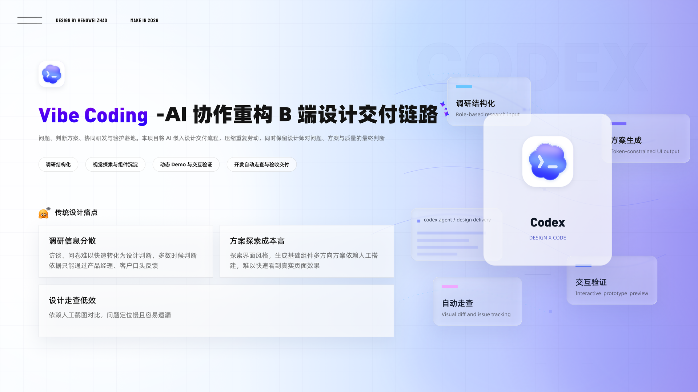

PROJECT 03 / AI-NATIVE DESIGN PRACTICE
Vibe Coding
Vibe Coding
AI 协作重构 B 端设计交付链路
从产品理解与调研结构化，到视觉探索、动态 Demo 和自动走查，把 AI 嵌入设计交付流程，压缩重复劳动，同时保留设计师对问题、方案与质量的最终判断。
AI-NATIVE DESIGN PRACTICE项目时间 2025–2026

01 / RESEARCH研究与问题定义
从产品理解开始，
把调研变成可复用输入。
从传统设计流程的痛点出发，让 AI 先理解产品与研究目标。项目将调研信息结构化，并探索从产品理解到可复用问卷 Skill 的协作方式。
02 / VISUAL EXPLORATION视觉探索与资产沉淀
扩展视觉方向，
再沉淀为组件与约束。
用 AI 扩展视觉方向，再将设计判断沉淀为组件与 Token 约束，让探索结果继续服务后续设计交付。
03 / PROTOTYPE动态验证
04 / DELIVERY自动走查与验收交付
把重复的走查流程，
产品化为 Figma 插件。
将重复的设计验收流程产品化为可复用的 Figma 插件 Visual Audit Assistant，用于识别视觉差异、生成模块级标注图与 Excel 走查报告。
插件交互演示
05 / REFLECTION成长与复盘
回看四年 B 端全链路实践，
明确能力收获与改进方向。
项目复盘围绕全链路设计实践展开，梳理设计师在 AI 协作中的职责边界：让工具承担重复劳动，设计师继续判断问题、方案与质量。